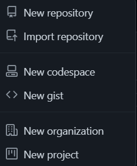
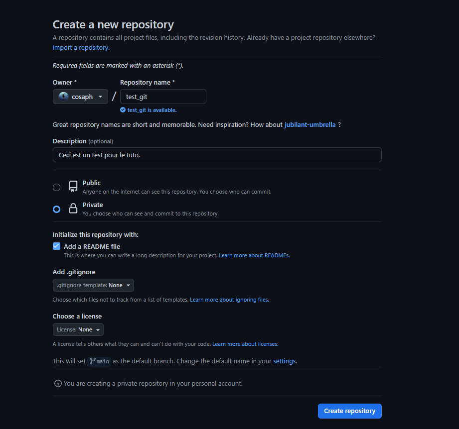
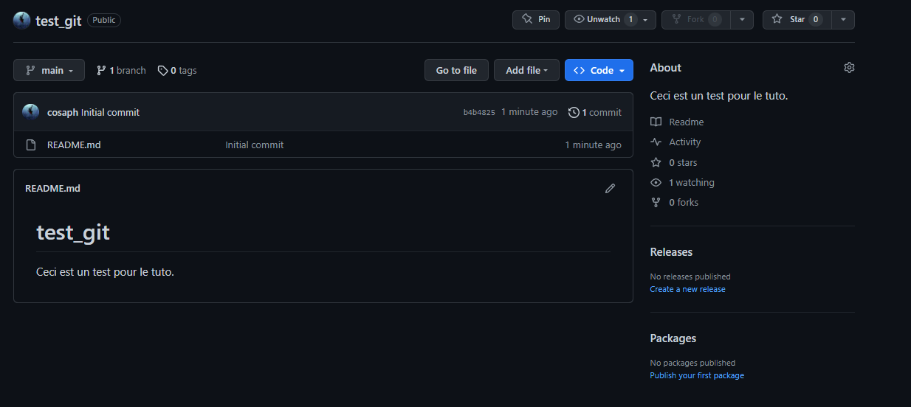

Comment utiliser GitHub

GitHub est une plateforme de développement collaboratif de logiciels qui facilite le partage, la gestion et la collaboration sur des projets de développement de logiciels.
1. Créer un nouveau dépot
Repository ou Projet ?
un repository est l’endroit où est stocké le code source d’un projet, tandis qu’un projet est une fonctionnalité pour organiser les tâches, les problèmes et les notes liés à ce projet.
Nous allons créer un repository qui permmettra de stocker toutes les fiches R déjà faites. Il faut donc cliquer sur le petit plus dans la barre de navigation et selectionner “new repository”.

2. Le repository
Pour créer le nouveau repository il faudra choisir un nom (repository name) Une description, une visibilité (publique ou privé).
Je fais le choix d’ajouter directement le fichier README.md à mon repository. Le fichier README.md est un fichier texte présent à la racine d’un dépôt GitHub qui décrit le projet et fournit des informations importantes aux utilisateurs et aux contributeurs du projet. Le fichier README est généralement écrit en format Markdown, qui permet de formater le texte avec des titres, des listes, des liens, des images, etc.

Voici ce que vous obtiendrez par la suite

3. Un premier ajout de fichier
Il faut a présent se placer dans votre terminal (VScode ou autre) et exectuer les commandes suivantes:
git init
Cette commande initialise un nouveau dépôt Git dans le répertoire courant. Elle crée un sous-répertoire nommé .git qui contient tous les fichiers nécessaires pour gérer le dépôt Git.
git add READ.md
Cette commande initialise un nouveau dépôt Git dans le répertoire courant. Elle crée un sous-répertoire nommé .git qui contient tous les fichiers nécessaires pour gérer le dépôt Git.
git commit -m “first commit”
Cette commande initialise un nouveau dépôt Git dans le répertoire courant. Elle crée un sous-répertoire nommé .git qui contient tous les fichiers nécessaires pour gérer le dépôt Git.
git branch -M main
Cette commande renomme la branche par défaut de “master” à “main”.
git remote add origin “https://github.com/nom_utilisateur/test_git.git”
Cette commande ajoute un nouveau référentiel Git distant appelé “origin”. Le nom “origin” est généralement utilisé pour le référentiel distant principal. L’URL est celle de votre dépôt GitHub et s’obtient en cliquant sur le petit bouton bleu code
git push -u origin main
Cette commande envoie les modifications du dépôt local vers le dépôt distant sur GitHub. L’option “-u” permet d’associer la branche locale “main” avec la branche distante “main” sur le référentiel “origin”. Cette étape ne sera nécessaire que pour le premier push, les pushs suivants, la commande sera simplement git push.
4. Pour des ajouts réguliers
git add lien_du_fichier_a_ajouter
git commit -m “ajout du jour”
git push origin main
5. Comment fusionner deux branches ?
Ici, on cherche à fusionner la branche main et master.
git checkout main
Cette commande change de branche pour la branche “main”. Cette commande doit être exécutée avant de fusionner la branche “master” pour s’assurer que les modifications sont apportées à la bonne branche.
git merge master
Cette commande fusionne la branche “master” avec la branche “main”. Si Git détecte un conflit entre les deux branches, il vous informera que la fusion ne peut pas être effectuée automatiquement et qu’il est nécessaire de résoudre le conflit manuellement.
git add lien_du_fichier_a_ajouter
git commit -m “resolution de conflit”
git push origin main